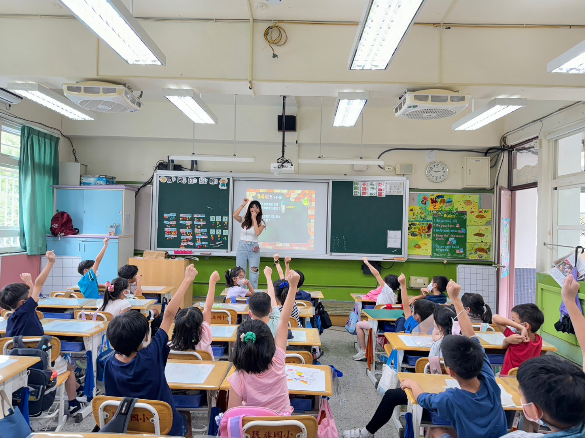

🫶
先學會聽懂孩子
· 專心傾聽
· 同理感受
· 安靜陪伴
這些方法，回到家也用得上。
很多家長一開始是想為孩子做點什麼而加入，後來才發現，最大的收穫是自己，不論在自我情緒覺察或人際關係的溝通上，也慢慢有了新的方法。
對孩子來說，是多一位願意理解他的溫柔大人；對家長自己來說，是把情緒教育從「知道」變成「真的會用。」
· 專心傾聽
· 同理感受
· 安靜陪伴
這些方法，回到家也用得上。
有完整教案、共學與督導陪伴，不是把家長直接「丟進教室」。一步一步練，安心很多。
一個人走得快
一群人走得遠
不是每一堂課都轟轟烈烈，但你會開始發現孩子更會說感受，自己也更能停下來聽。

「我從 EQ 課中學會了怎麼『理解、接納』孩子的情緒，而不是急著糾正他。」
— 現任民族國小 EQ 志工分享「EQ 好朋友」是認識我們、詢問與協助報名的入口；參與培訓後，就可以加入「EQ 志工」群組，依自己的時間進班協助。若想成為主講，參與督導備課演練，也很歡迎一起加入帶課的行列。
給想認識 EQ 組的新家長。這裡會提供招募資訊、回答問題，並協助培訓課程報名。
此階段尚不能入班。
培訓包含線上理論課＋實體／線上共學課
參與培訓後，就可以協助全年級。
參與培訓後就會加入正式志工群組，可以查看班表、依自己的時間進班協助。也歡迎參與督導備課演練擔任該年級主講，一起陪孩子上 EQ 課。
不用每個人都當主講。依你的時間與熟悉度，可以選擇協助，也很歡迎慢慢熟悉後一起加入主講。
很適合想先熟悉教室現場、依時間彈性參與的家長
若時間允許，或對主講有興趣，都很歡迎和組長／副組長聊聊
如果你還在了解、想問培訓時間，或只是想先認識我們，都很歡迎加入 EQ 好朋友。我們會在這裡提供招募資訊、回答問題，也協助你完成培訓報名。
🌱 小提醒：「EQ 好朋友」是新夥伴認識 EQ、詢問與培訓報名的群組；參與培訓後，才會加入「EQ 志工」群組，開始安排進班協助或主講。
每學期開放的培訓年級會不同。如果還不確定，也很歡迎先到「EQ 好朋友」詢問我們。
點選下面的課程，就可以前往芯福里協會官網查看完整培訓簡章與課程說明。
準備好參與培訓了嗎？可以直接在這裡完成表單。
送出表單後，後續會有負責人員與您聯繫。

「EQ 好朋友」是給正在了解的新夥伴，用來接收招募資訊、詢問與協助培訓報名；報名參與培訓後，才會加入正式的「EQ 志工」群組，開始安排進班協助。
當然可以。培訓包含線上理論課與實體／線上共學課，會一步一步帶大家熟悉課程。若想嘗試主講，每次進班前也會一起備課與演練，有夥伴陪著準備，不需要自己從零開始。
不用一開始就主講。參與培訓後，可以先從「協助」開始，依自己的時間協助課堂秩序、拍照與現場流程，而且不強制參加備課演練。若時間允許、也有興趣成為主講，很歡迎和組長／副組長聊聊。
可以。進班協助可以依自己的時間與班表彈性參與，不需要每一堂都到。很歡迎先加入「EQ 好朋友」了解看看，再找到最適合自己的參與方式。